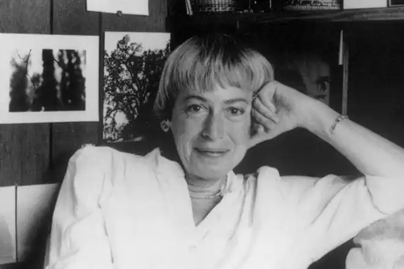

Урсула Крьобер-Ле Ґуїн (англ. Ursula Kroeber Le Guin; 21 жовтня 1929, Берклі, Каліфорнія — 22 січня 2018, Портленд, Орегон) — відома американська письменниця-фантастка, літературна критикиня та перекладачка фантастики. Лауреатка премії "Гросмейстер фантастики" за заслуги перед жанром (2001).
Урсула Ле Ґуїн писала також нефантастичні романи, вірші, дитячі книги, есе про літературу, однак найбільшої популярності набула як авторка романів і повістей у жанрах наукової фантастики та фентезі. Книги Ле Гуїн завжди чудові за стилем, в них авторка звертається до конфліктів і взаємодії різних культур, даосизму, анархізму, психологічних і соціальних тем. У пізніших роботах вона торкається також феміністської тематики (зокрема, в жанрі екофемінізму). Авторка є однією з найавторитетніших фантастів, лауреаткою кількох найвищих нагород в області наукової фантастики і фентезі (премія Г'юго, премія Неб'юла, премія Локус).
Народилася 1929 року в Берклі, штат Каліфорнія, у родині відомого антрополога Альфреда Луї Крьобера і письменниці Теодори Крьобер. Перше оповідання написала у віці 11 років (журнал Astounding Science Fiction повернув оповідання авторці, відмовившись друкувати його). У 1951 році здобула ступінь бакалавра в коледжі Редкліф, у 1952 — захистила магістерську роботу в Колумбійському університеті на тему "Романтична література Середньовіччя та Відродження", спеціалізувалася на середньовічній романській літературі. Під час навчання у Франції у 1953 році познайомилася з істориком Чарльзом Ле Гуїном, одружилася з ним в тому ж році в Парижі.Діти — дві дочки і син. З 1958 року мешкала у місті Портленд, штат Орегон. Урсула Ле Ґуїн померла 22 січня 2018 року у своєму домі в Портланді у віці 88 років. ЇЇ син не повідомив причину смерті, але зазначив, що вона мала тяжкий стан здоров'я вже протягом декількох місяців. Ле Ґуїн відрізняється від інших письменни/ць фантастики насамперед гуманітарним ухилом, акцентом на соціологію й антропологію. Це особливо помітно в науково-фантастичних книгах так званого Гайнського циклу, об'єднаних темою культурної взаємодії планет у далекому майбутньому. Найпоказовішим щодо цього є роман "Знедолені" з підзаголовком "Неоднозначна утопія", який розповідає про цивілізацію, засновану на анархізмі. Незважаючи на фантастичні деталі, книги Ле Ґуїн — завжди про людину. Романи Гайнського циклу розповідають про конфлікти, взаємодію і взаємопроникнення відмінних одна від одної культур. Найчастіше ці культури мають незвичайні, часом екзотичні риси, і обігруючи цю незвичайність, авторка показує нам деякі сторони нашої власної культури. Прикладом може бути глибоке дослідження впливу статі на особистість, життя і сприйняття людини в книзі "Ліва рука темряви", протагоніст/ка якої — людина з планети, жителі якої можуть змінювати стать. Світи Ле Ґуїн переконливі, детальні, населені персонажами, головне в яких — їхні незмінні людські риси. На відміну від багатьох інших фантаст/ок, сюжети її книг — це дорослішання, подолання себе, пізнання або входження в іншу культуру, пошук відповіді на якесь питання в собі, а не перетворення світу поза собою. Так, наприклад, романи циклу про Земномор'я — "Чарівник Земномор'я" (1968), "Гробниці Атуану" (1971), "Останній берег" (1972) тощо — які стали класикою фентезі, можна читати як притчі про дорослішання, про зустріч з інакшістю, про життя і смерть, про злагоду з самими собою. Ранні твори, дія яких відбувається у вигаданій центральноєвропейській країні Орсинії, стилістично не належали до фантастики і не публікувалися, але мали значний вплив на подальшу творчість, зокрема збірку оповідань "Орсинійські історії" і роман "Малафрена". Першим опублікованим оповіданням Ле Гуїн було "Квітень в Парижі" ("April in Paris"), журнал "Fantastic", 1962. Відтоді Ле Ґуїн регулярно публікує фантастичні оповідання та повісті. Популярність приходить до неї в 1969 році після публікації роману "Ліва рука темряви", який здобув обидві найвищі премії англомовної фантастики — "Г'юго" та "Неб'юла".